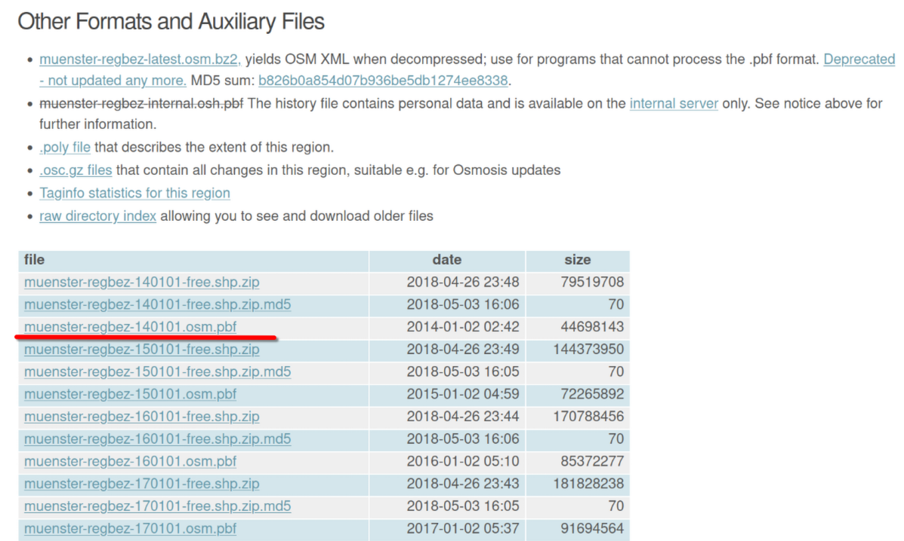
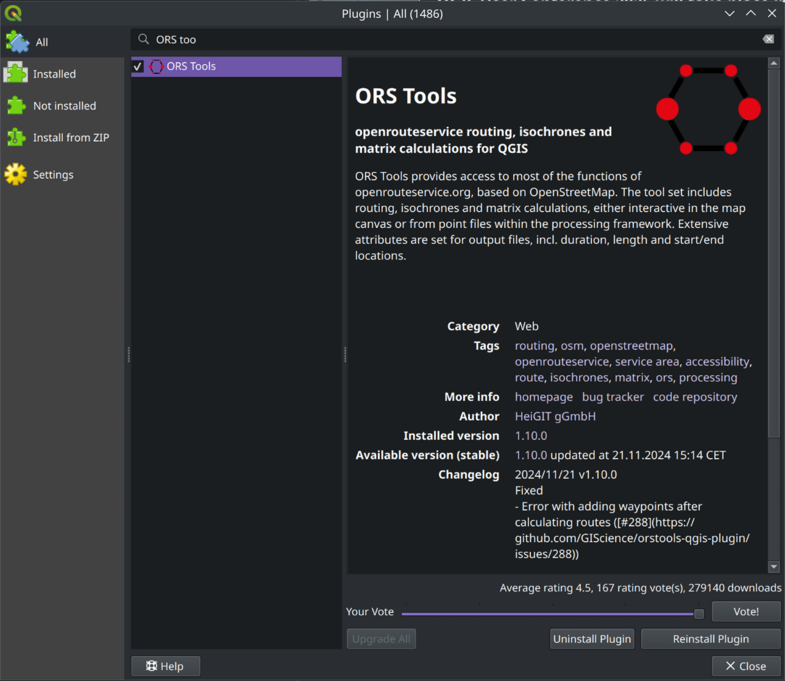
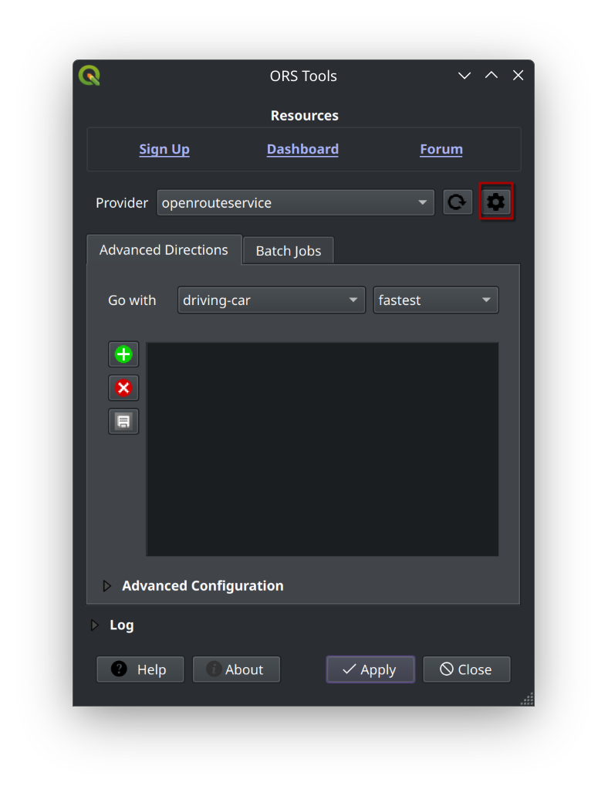
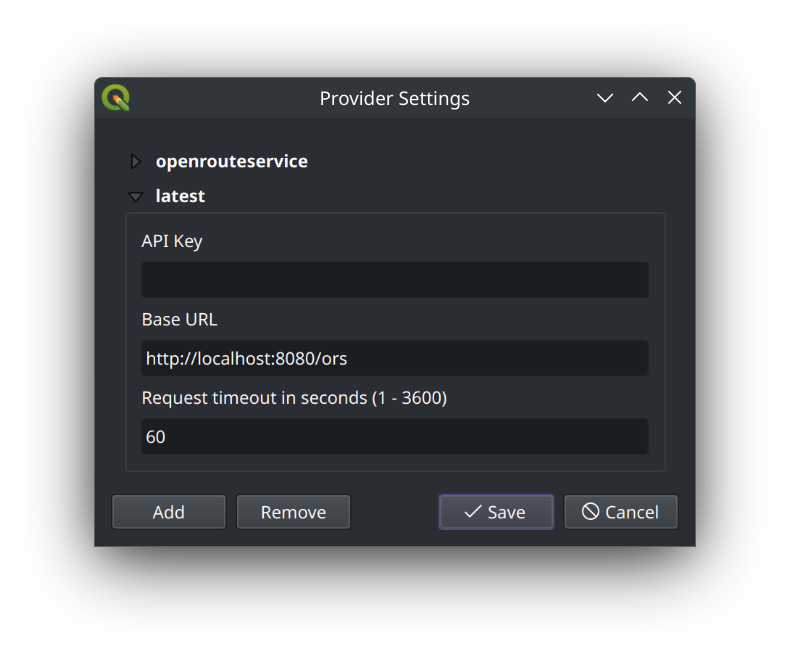
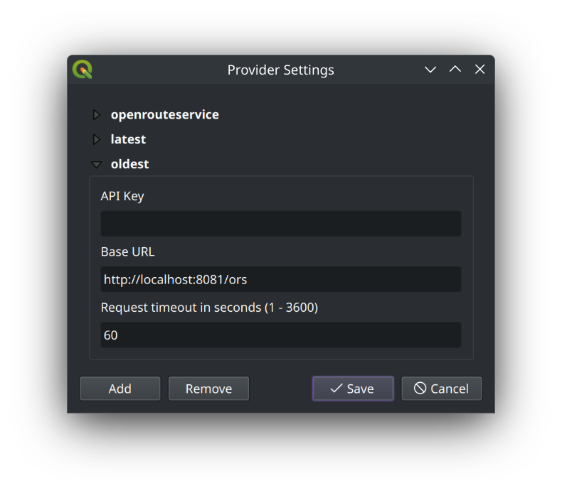
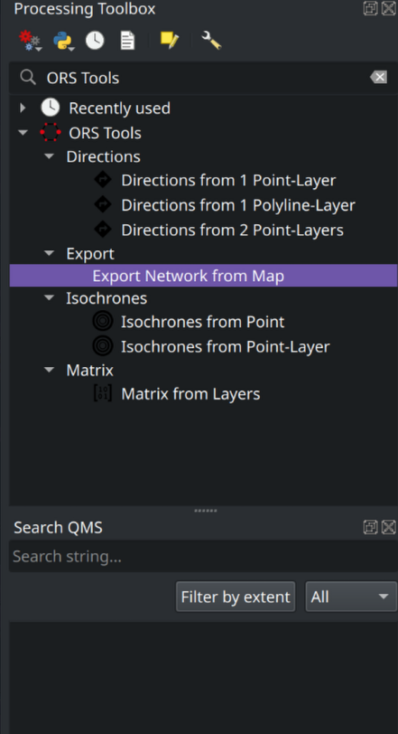
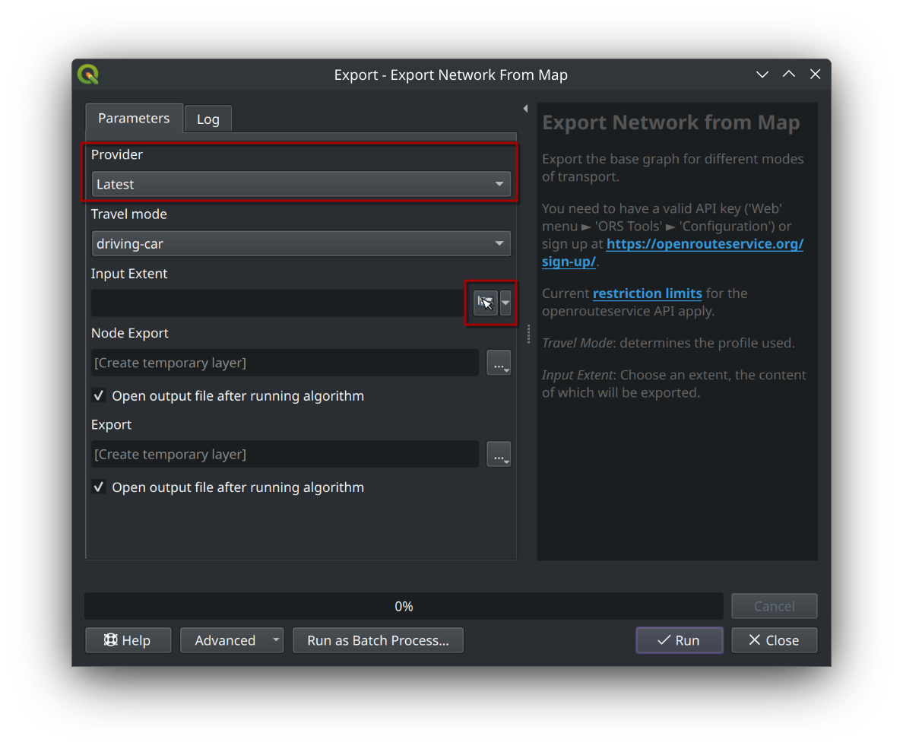

Openrouteservice aufsetzen#
1. Basisumgebung einrichten#
Anforderungen#
Docker: Container-Plattform für die ORS-Installation
Docker Compose: Tool zur einfachen Verwaltung von Docker-Containern
cURL: Kommandozeilentool für HTTP-Anfragen
git: Versionskontrollsystem zum Klonen des Workshop-Repositories
Linux oder macOS: Betriebssysteme mit vollen Docker-Funktionen
Mindestens 4GB RAM: Für die Grapherstellung empfohlen
Repository klonen#
Wir beginnen damit, das Workshop-Repository zu klonen, welches alle benötigten Dateien enthält, einschließlich der Docker Compose-Konfiguration.
# Repository klonen
git clone https://github.com/GIScience/osm-transform-workshop-FOSSGIS-25.git
cd osm-transform-workshop-FOSSGIS-25
# Verzeichnisse für ORS-Dateien erstellen
mkdir -p ors-docker-latest/files ors-docker-historic/files
PBF-Datei herunterladen#
Für den ersten Teil dieser Anleitung arbeiten wir mit zwei PBF-Dateien: Münster und Detmold. Es können jederzeit andere PBF-Dateien von Geofabrik heruntergeladen werden: https://download.geofabrik.de
# Münster PBF-Datei herunterladen
curl -C - https://download.geofabrik.de/europe/germany/nordrhein-westfalen/muenster-regbez-latest.osm.pbf -o ors-docker-latest/files/muenster-regbez-latest.osm.pbf
# Detmold PBF-Datei herunterladen
curl -C - https://download.geofabrik.de/europe/germany/nordrhein-westfalen/detmold-regbez-latest.osm.pbf -o ors-docker-latest/files/detmold-regbez-latest.osm.pbf
Hinweis zu cURL-Optionen:
-C -: Ermöglicht das Fortsetzen eines unterbrochenen Downloads-o: Bestimmt den Namen der Ausgabedatei
2. Docker Compose für Openrouteservice#
Das geklonte Repository enthält bereits eine vorkonfigurierte docker-compose.yml Datei im Hauptverzeichnis. Diese Datei definiert verschiedene Openrouteservice-Container mit unterschiedlichen Konfigurationen:
ors-app: Basis-Konfiguration mit dem Auto-Profil und Münster-Datenors-app-historic: Container mit historischen Münster-Daten von 2014ors-app-multi-profile: Container mit mehreren Profilen (Auto und Fahrrad)ors-app-multi-source: Container mit unterschiedlichen Datenquellen pro Profil
Sie können den Inhalt der Datei mit einem Texteditor inspizieren:
# Docker Compose-Datei anzeigen
cat docker-compose.yml
3. Openrouteservice mit Docker Compose starten#
Container mit Basis-Konfiguration starten (Auto-Profil mit Münster-Daten)#
Zunächst starten wir den Openrouteservice-Container mit der Basis-Konfiguration, die das Auto-Profil und Münster-Daten verwendet.
Der betreffende Dienst in der docker-compose.yml Datei ist ors-app und beinhaltet die folgende Konfiguration:
ors-app:
image: openrouteservice/openrouteservice:latest
container_name: ors-app
user: "${UID:-1000}:${GID:-1000}"
ports:
- "8080:8082"
volumes:
- ./ors-docker-latest:/home/ors
environment:
- CONTAINER_LOG_LEVEL=INFO
- XMS=1g
- XMX=2g
- REBUILD_GRAPHS=true
- ORS_ENGINE_PROFILES_DRIVING_CAR_BUILD_SOURCE_FILE=/home/ors/files/muenster-regbez-latest.osm.pbf
- ORS_ENGINE_PROFILES_DRIVING_CAR_ENABLED=true
Hinweis zu der Konfiguration:
image: Docker-Image für Openrouteservicecontainer_name: Name des Containersuser: Benutzer-ID und Gruppen-ID für den Container. 1000 ist der Standardwert für den ersten Benutzer auf den meisten Systemen und erlaubt den Zugriff auf die gemounteten Dateien des Containers.ports: Portweiterleitung von Container-Port 8082 auf Host-Port 8080volumes: Mount-Punkt für die Arbeitsumgebung des Containersenvironment: Umgebungsvariablen für den Container, einschließlich der PBF-Datei und des ProfilsREBUILD_GRAPHS: Erzwingt den Neuaufbau der Routing-GraphenORS_ENGINE_PROFILES_DRIVING_CAR_BUILD_SOURCE_FILE: Pfad zur Münster PBF-DateiORS_ENGINE_PROFILES_DRIVING_CAR_ENABLED: Aktiviert das Auto-ProfilXMSundXMX: Speichergröße für den ContainerCONTAINER_LOG_LEVEL: Log-Level für den Container
# Container starten
docker-compose up -d ors-app
# Logs überwachen
docker-compose logs -f ors-app
API-Verfügbarkeit prüfen#
Nachdem der Container gestartet wurde, kann die API unter http://localhost:8080/ors erreicht werden.
# Health-Endpunkt prüfen
curl http://localhost:8080/ors/v2/health
# Verfügbare Profile überprüfen
curl http://localhost:8080/ors/v2/status
4. Openrouteservice mit mehreren Profilen#
Um den Openrouteservice mit mehreren Profilen zu starten, bearbeiten Sie die docker-compose.yml Datei und entfernen Sie die Kommentarzeichen vor dem ors-app-multi-profile-Service.
Dieser Service beinhaltet die folgende Konfiguration:
ors-app-multi-profile:
image: openrouteservice/openrouteservice:latest
container_name: ors-app-multi-profile
user: "${UID:-1000}:${GID:-1000}"
ports:
- "8081:8082"
volumes:
- ./ors-docker-latest:/home/ors
environment:
- CONTAINER_LOG_LEVEL=INFO
- XMS=1g
- XMX=2g
- REBUILD_GRAPHS=true
- ORS_ENGINE_PROFILE_DEFAULT_BUILD_SOURCE_FILE=/home/ors/files/muenster-regbez-latest.osm.pbf
- ORS_ENGINE_PROFILES_DRIVING_CAR_ENABLED=true
- ORS_ENGINE_PROFILES_CYCLING_REGULAR_ENABLED=true
Hinweis zu der Konfiguration: Siehe vorherigen Abschnitt für die generellen Informationen zur Konfiguration.
ORS_ENGINE_PROFILE_DEFAULT_BUILD_SOURCE_FILE: Pfad zur Münster PBF-DateiORS_ENGINE_PROFILES_DRIVING_CAR_ENABLED: Aktiviert das Auto-ProfilORS_ENGINE_PROFILES_CYCLING_REGULAR_ENABLED: Aktiviert das Fahrrad-Profil
# Bearbeiten Sie die docker-compose.yml und aktivieren Sie den multi-profile Service
# Stoppen Sie bestehende Services
docker-compose down
# Starten Sie den Service mit mehreren Profilen
docker-compose up -d ors-app-multi-profile
# Logs überwachen
docker-compose logs -f ors-app-multi-profile
Die API ist unter http://localhost:8081/ors erreichbar und kann über die selben health- und status-Endpunkte wie zuvor überprüft werden.
5. Openrouteservice mit unterschiedlichen PBF-Dateien pro Profil (Münster und Detmold)#
Um den Openrouteservice mit unterschiedlichen PBF-Dateien pro Profil zu starten, aktivieren Sie den ors-app-multi-source-Service in der docker-compose.yml.
Dieser Service beinhaltet die folgende Konfiguration:
ors-app-multi-source:
image: openrouteservice/openrouteservice:latest
container_name: ors-app-multi-source
user: "${UID:-1000}:${GID:-1000}"
ports:
- "8082:8082"
volumes:
- ./ors-docker-latest:/home/ors
environment:
- CONTAINER_LOG_LEVEL=INFO
- XMS=1g
- XMX=2g
- REBUILD_GRAPHS=true
- ORS_ENGINE_PROFILE_DEFAULT_BUILD_SOURCE_FILE=/home/ors/files/muenster-regbez-latest.osm.pbf
- ORS_ENGINE_PROFILES_DRIVING_CAR_ENABLED=true
- ORS_ENGINE_PROFILES_CYCLING_REGULAR_ENABLED=true
- ORS_ENGINE_PROFILES_CYCLING_REGULAR_BUILD_SOURCE_FILE=/home/ors/files/detmold-regbez-latest.osm.pbf
Hinweis zu der Konfiguration: Siehe vorherigen Abschnitt für die generellen Informationen zur Konfiguration.
ORS_ENGINE_PROFILE_DEFAULT_BUILD_SOURCE_FILE: Pfad zur Münster PBF-DateiORS_ENGINE_PROFILES_DRIVING_CAR_ENABLED: Aktiviert das Auto-ProfilORS_ENGINE_PROFILES_CYCLING_REGULAR_ENABLED: Aktiviert das Fahrrad-ProfilORS_ENGINE_PROFILES_CYCLING_REGULAR_BUILD_SOURCE_FILE: Pfad zur Detmold PBF-Datei
# Bearbeiten Sie die docker-compose.yml und aktivieren Sie den multi-source Service
# Stoppen Sie bestehende Services
docker-compose down
# Starten Sie den Service mit unterschiedlichen Datenquellen pro Profil
docker-compose up -d ors-app-multi-source
# Logs überwachen
docker-compose logs -f ors-app-multi-source
Die API ist dann unter http://localhost:8082/ors für beide Profile erreichbar und kann über die selben health- und status-Endpunkte wie zuvor überprüft werden.
6. Openrouteservice mit historischen PBF-Dateien#
Limitationen: Um die historischen Daten zu visualisieren, können wir QGIS und das ORS-Tools-Plugin verwenden.
Das ORS-Tools-Plugin ermöglicht es, die Funktionalitäten von Openrouteservice in QGIS zu nutzen und zu verarbeiten.
Die derzeitige Version erlaubt es noch nicht, andere als die Standardprofile zu verwenden (z.B. car-historic), aber wir können mit einem Workaround die historischen Daten visualisieren.
1. Container Setup mit Münster und historischem Münster PBF-Dateien#
Historische PBF-Dateien herunterladen#
Im folgenden Abschnitt werden wir einen Openrouteservice-Container mit historischen PBF-Dateien starten.
Zunächst schauen wir uns auf der Geofabrik-Website die verfügbaren PBF-Dateien an: https://download.geofabrik.de/europe/germany/nordrhein-westfalen/muenster-regbez.html. Dort finden wir unter anderem historische PBF-Dateien, die wir für unsere Zwecke verwenden können.
Um zu der Übersicht mit den historischen PBF-Dateien zu gelangen, klicken wir auf den Link “raw directory index”.
Dort wählen wir die älteste verfügbare PBF-Datei vom 02.01.2014 aus: muenster-regbez-140101.osm.pbf.

# Ordnerstruktur für historische Daten erstellen
mkdir -p ors-docker-historic/files
# Historische Münster PBF-Datei herunterladen
curl -C - https://download.geofabrik.de/europe/germany/nordrhein-westfalen/muenster-regbez-140101.osm.pbf -o ors-docker-historic/files/muenster-regbez-140101.osm.pbf
Starten der beiden Openrouteservice-Container#
Mit Docker Compose können wir zwei Container gleichzeitig starten - einen mit aktuellen und einen mit historischen Daten.
Dafür müssen wir die docker-compose.yml Datei anpassen und die entsprechenden Dienste ors-app und ors-app-historic einkommentiert werden.
Der Inhalt der Datei sollte wie folgt aussehen:
ors-app:
image: openrouteservice/openrouteservice:latest
container_name: ors-app
user: "${UID:-1000}:${GID:-1000}"
ports:
- "8080:8082"
volumes:
- ./ors-docker-latest:/home/ors
environment:
- CONTAINER_LOG_LEVEL=INFO
- XMS=1g
- XMX=2g
- REBUILD_GRAPHS=true
- ORS_ENGINE_PROFILES_DRIVING_CAR_BUILD_SOURCE_FILE=/home/ors/files/muenster-regbez-latest.osm.pbf
- ORS_ENGINE_PROFILES_DRIVING_CAR_ENABLED=true
ors-app-historic:
image: openrouteservice/openrouteservice:latest
container_name: ors-app-historic
user: "${UID:-1000}:${GID:-1000}"
ports:
- "8083:8082"
volumes:
- ./ors-docker-historic:/home/ors
environment:
- CONTAINER_LOG_LEVEL=INFO
- XMS=1g
- XMX=2g
- REBUILD_GRAPHS=true
- ORS_ENGINE_PROFILES_DRIVING_CAR_BUILD_SOURCE_FILE=/home/ors/files/muenster-regbez-140101.osm.pbf
- ORS_ENGINE_PROFILES_DRIVING_CAR_ENABLED=true
Hinweis zu der Konfiguration: Die Konfiguration ist im Wesentlichen die gleiche wie zuvor, mit dem Unterschied, dass wir einen zweiten Container mit historischen Daten starten.
# Services starten
docker-compose up -d ors-app ors-app-historic
# Logs überwachen
docker-compose logs -f
Die Services sind unter folgenden URLs erreichbar:
Aktuelle Daten:
http://localhost:8080/orsHistorische Daten:
http://localhost:8083/ors
Nun können wir die Verfügbarkeit prüfen:
# Aktuelle API prüfen
curl http://localhost:8080/ors/v2/health
# Historische API prüfen
curl http://localhost:8083/ors/v2/health
2. Visualisierung historischer Daten in QGIS#
Wir haben zwei Openrouteservice-Container gestartet, die jeweils auf Port 8080 und 8083 erreichbar sind und unterschiedliche PBF-Dateien verwenden. Nun können wir damit beginnen die historischen und aktuellen Daten in QGIS zu visualisieren und miteinander zu vergleichen.
ORS-Tools-Plugin installieren#
Zunächst installieren wir das ORS-Tools-Plugin in QGIS.
Dazu öffnen wir QGIS und installieren die Erweiterung:

Lokale Openrouteservice-Instanz konfigurieren#
Anschließend konfigurieren wir das ORS-Tools-Plugin, um die lokale Openrouteservice-Instanz zu verwenden.
Dazu öffnen wir die Einstellungen des Plugins und wählen die Provider-Option aus.

Dort fügen wir eine neue Konfiguration hinzu und geben die URLs der lokalen Openrouteservice-Instanz an.
Zunächst konfigurieren wir die Openrouteservice-Instanz mit dem aktuellen Münster PBF-File:
Dabei achten wir darauf, dass die URL wie folgt lautet: http://localhost:8080/ors.

Danach konfigurieren wir die Openrouteservice-Instanz mit dem historischen Münster PBF-File.
Dabei achten wir darauf, dass die URL wie folgt lautet: http://localhost:8083/ors.

Bei beiden Konfigurationen wird das Feld API Key leer gelassen, da wir uns mit eigenen Instanzen nicht authentifizieren müssen.
Exportieren und Visualisieren der Routing-Graphen#
Wir können nun mit dem ORS-Tools-Plugin die lokalen Openrouteservice-Instanzen verwenden.
Zur besseren Veranschaulichung werden wir die Routing-Graphen exportieren und in QGIS visualisieren.
Zunächst wählen wir in der Processing Toolbox ⇾ Export Network from Map.

Dort wählen wir die gewünschte Openrouteservice-Instanz (latest) und das Profil (driving-car) aus, für das wir den Routing-Graphen exportieren möchten.

Mit der Bestätigung auf Run wird der Routing-Graph exportiert und in QGIS geladen.
Dies machen wir auch für die historische Openrouteservice-Instanz, in dem wir die entsprechenden Einstellungen vornehmen und oldest als Provider auswählen.
Mit erneuter Bestätigung auf Run wird der “alte” Routing-Graph exportiert und in QGIS geladen.
Durch unterschiedliches Styling ist es nun möglich, die historischen und aktuellen Daten miteinander zu vergleichen.

7. Aufräumen und Ressourcen freigeben#
Nach Abschluss des Workshops sollten Sie die Docker-Container stoppen und entfernen sowie nicht mehr benötigte Dateien löschen, um Speicherplatz freizugeben.
Container stoppen und entfernen#
# Alle Container stoppen und entfernen
docker-compose down
# Überprüfen, ob Container entfernt wurden
docker ps -a | grep ors-app
Dateien und Verzeichnisse aufräumen#
Die heruntergeladenen PBF-Dateien und erstellten Graphen können je nach Region mehrere Gigabyte Speicherplatz belegen.
# Größe der ORS-Verzeichnisse anzeigen
du -sh ./ors-docker-*
# Optionaler Schritt: Verzeichnisse löschen, wenn nicht mehr benötigt
rm -rf ./ors-docker-latest ./ors-docker-historic
rm -f docker-compose.yml
8. Zusammenfassung#
Wir haben in diesem Tutorial gelernt, wie sich Openrouteservice-Container mit unterschiedlichen PBF-Dateien und Profilen starten lassen. Dabei haben wir uns auf die Konfiguration von Profilen für Autofahrer und Radfahrer konzentriert. Zudem haben wir gelernt, wie historische PBF-Dateien verwendet und mit QGIS visualisiert werden können. Zum wurde gezeigt, wie die Docker-Container aufgeräumt und nicht mehr benötigte Dateien gelöscht werden können.